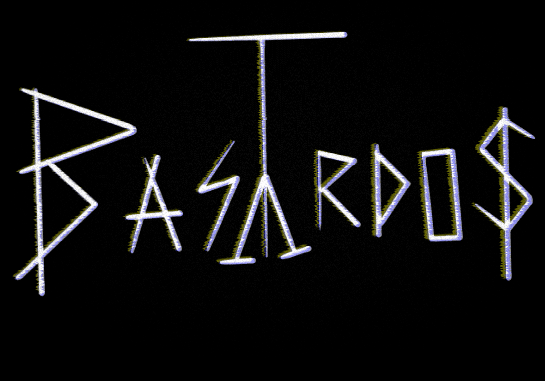

<router-outlet></router-outlet>
<script defer src="./turnOn.js"></script>
<main>  
    <div id="contenedor" class="crt-effect">
        <br>
    </div>
    <div class="crt">
        <div class="wrapper">
        
    </div>
    <p class="subtitulo"><a class="enlace" href="/home">CLICA AQUÍ PARA EMPEZAR</a></p>

    </div>
    <div class="centered">
        <p class="narrow-p">
            <span class="code"><span class="pink">Un proyecto</span> <span class="lightblue"><!--pre>{{ '{' }}</pre--> creado <!--pre>{{ '}' }}</pre--></span> por <span class="yellow">Gabs</span>;</span><span class="cursor">_</span>
        </p>
    </div>
</main>
